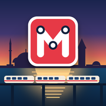

Şehir ulaşım simülatörü: İstanbul'dan Trabzon'a 7 gerçek şehirde, 2010'dan başlayarak metro ağını kur, gerçek etkinliklere hazırlan ve seçimleri kazan.
Soru, hata bildirimi ve öneriler için / For questions, bug reports and ideas:
github.com/efeardaaric/MetroGame/issues
Gizlilik Politikası / Privacy Policy
© 2026 Efe Arda Arıç